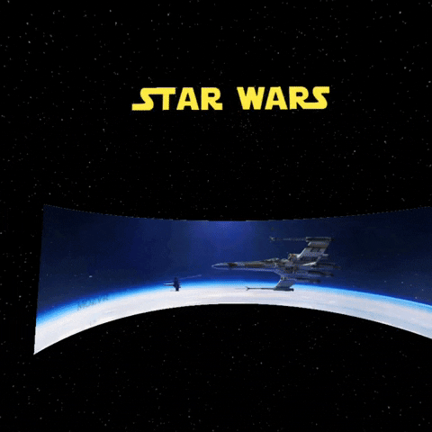

StarWars.VR
Concept for a commercial WebVR page
These projects are concepts showcasing what can be achieved with the A-frame javascript library.
The main idea is the use of VR for promotional/commercial material for brands and franchises.
One of the most frustrating thing is the lack of "made for VR" webpages showcasing products, games and content. I strongly believe that brands have a lot to gain by using immersive media. By creating a solid presence in the VR-space, brands can provide innovative original content showcasing their products, while interacting and engaging with their end-user in a common virtual space. I mean, sure, a 2D video shows whatever you've got, but I want to be part of it. I did not get into VR just to see a video on a giant 2D screen. I came to VR to experience new sensations. Let me :EXPERIENCE: your brand, it's worlds, and make me feel more immersed then ever in the worlds and visions you are creating.

Concept for a commercial WebVR page

Browse 360 images on VR-devices

WIP concept for a Middle-Earth themed WebVR page